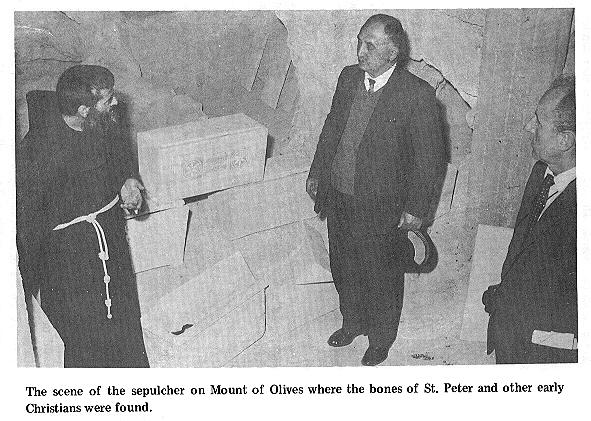

I talked to a Yale professor, who is an archaeologist, and
was director of the American School of Oriental Research in Jerusalem. He told
me that it would be very improbable that a name with three words, and one so
complete, could refer to any other than St. Peter.
But what makes the possibility of error more remote is that
the remains were found in a Christian burial ground, and more yet, of the
first century, the very time in which Peter lived. In fact, I have a letter
from a noted scientist stating that he can tell by the writing that it was
written just before the destruction of Jerusalem by Titus in 70 A.D.
I talked to priest Milik, the co-writer of this Italian
book, in the presence of my friend, a Christian Arab, Mr. S. J. Mattar, who
now is the warden of the Garden Tomb, where Jesus was buried and rose again.
This priest, Milik, admitted that he knew that the bones of St. Peter are not
in Rome. I was very much surprised that he would admit that, so to confirm his
admittance, I said, to which he also agreed, "There is a hundred times more
evidence that Peter was buried in Jerusalem than in Rome." This was something
of an understatement, for he knew as I know that there is absolutely no
evidence at all that Peter was buried in Rome. I have spoken on the subject to many Franciscan priests who
either were or had been in Jerusalem, and they all agree that the tomb and
remains of St. Peter are in Jerusalem. There was just one exception which is
interesting and which only proves the point. The Franciscan priest, Augusto
Spykerman, who was in charge of the semi-private museum inside the walls of
old Jerusalem, by the site of the Franciscan Church of the Flagellation, was
that exception. When I asked to see the museum, he showed it to the three of
us, Mr. Mattar, who in addition to being warden of the Tomb of Christ, had
been the manager of an English bank in Jerusalem, a. professional photographer
and myself. But he told us nothing of the discovery. I knew that the evidence
of Peter’s burial was there, for priests had told me that relics from the
Christian burial ground were preserved within this museum. People who lived in
Jerusalem all their lives and official guides who are supposed to know every
inch of the city, however, knew nothing of this [pg 5] discovery, so well was it
withheld from the public. I had asked an elderly official guide where the tomb
of St. Peter was. He responded in a very profound and majestic tone of voice,
"The Tomb of St. Peter has never been found in Jerusalem." "Oh," I said, "but
I have seen the burial place of Peter with my own eyes." He turned on me with
a fierceness that is so common among Arabs. "What," he replied, "you a
foreigner mean to tell me that you know where the tomb of St. Peter is when I
have been an official guide for thirty-five years and know every inch of
ground in Jerusalem?" I was afraid that he would jump at my throat. I managed
to calm him as I said, "But sir, here are the pictures and you can see the
ossuary, among others, with Peter’s name in Aramaic. You can also see this for
yourself on the Mount of Olives on the Franciscan Convent site called, "Dominus Flevit". When I finished he slowly turned away in stunned amazement. A person
who has seen this Christian burial ground and knows the circumstances
surrounding the case could never doubt that this truly is the burial place of
St. Peter and of other Christians. I, too, walked around in a dreamy amazement
for about a week for I could hardly believe what I had seen and heard. Since
the circulation of this article, they do not allow anyone to see this burial
place.
Before things had gone very far, I had been quite
discouraged for I could get no information from the many priests with whom I
had talked. However, I continued questioning priests wherever I would find
them. Finally one priest dropped some information. With that knowledge I
approached another priest who warily asked me where I had acquired that
information. I told him that a priest had told me. Then he admitted the point
and dropped a little more information. It went on like that for some time
until I got the whole picture, and I was finally directed to where I could see
the evidence for myself. To get the story, it made me feel as though I had a
bull by the tail and were trying to pull him through a key hole. But when I
had gathered all the facts in the case, the priests could not deny the
discovery of the tomb, but even confirmed it, though reluctantly. In fact, I
have the statement from a Spanish priest on the Mount of Olives on a tape
recorder, to that effect.
But here we were talking to this Franciscan priest in
charge of the museum, asking him questions which he tried to evade but could
not because of the information I had already gathered from the many priests
with whom I had spoken. Finally after the pictures of the evidence were taken,
which was nothing short of a miracle that he allowed us to do so, I
complimented him on the marvelous discovery of the tomb of St. Peter in
Jerusalem that the Franciscans had made. He was clearly nervous as he said,
"Oh no, the tomb of St. Peter is in Rome." But as he said that, his voice
faltered, a fact which even my [pg. 6] friend, Mr. Mattar, had noticed. Then I looked
him squarely in the eyes and firmly said, "No, the tomb of St. Peter is in
Jerusalem." He looked at me like a guilty school boy and held his peace. He
was, no doubt, placed there to hide the facts, but his actions and words,
spoke more convincingly about the discovery than those priests who finally
admitted the truth.
I also spoke to a Franciscan priest in authority at the
priest’s printing plant within the walls of old Jerusalem, where their book on
the subject was printed. He also admitted that the tomb of St. Peter is in
Jerusalem. Then when I visited the Church of the Nativity in Bethlehem, I
encountered a Franciscan monk. After telling him what I thought of the
wonderful discovery the Franciscans had made, I asked him plainly, "Do you
folks really believe that those are the remains of St. Peter?" He responded,
"Yes we do, we have no choice in the matter. The clear evidence is there." I
did not doubt the evidence, but what surprised me was that these priests and
monks believed that which was against their own religion and on top of that,
to admit it to others was something out of this world. Usually a Catholic,
either because he is brainwashed or stubbornly doesn’t want to see anything
only that which he has been taught, will not allow himself to believe anything
against his religion, much less to admit it to others. But there is a growing,
healthy attitude among many Catholics, to "prove all things, hold fast to that
which is good" as the Master admonished us all.
Then I asked, "Does Father Bagatti (co-writer of the book
in Italian on the subject, and archaeologist) really believe that those are
the bones of St. Peter?"
"Yes, he does," was the reply.
Then I asked,
"But what does the Pope think of all this?"
That was a thousand dollar
question and he gave me a million dollar answer.
"Well," he
confidentially answered in a hushed voice, "Father Bagatti told me personally
that three years ago he went to the Pope (Pius XII) in Rome and showed him the
evidence and the Pope said to him, ‘Well, we will have to make some changes,
but for the time being, keep this thing quiet’." In awe I
asked also in a subdued voice, "So the Pope really believes that those are the
bones of St. Peter?"
"Yes," was his answer. "The documentary evidence
is there, he could not help but believe."
I visited various renowned archaeologists on the subject.
Dr. Albright, of the John Hopkins University in Baltimore, told me that he
personally knew priest Bagatti and that he was a very competent archaeologist.
I also spoke with Dr. Nelson Gluek, archaeologist and [pg. 7] president of the Hebrew
Union College in Cincinnati, Ohio. I showed him the pictures found in this
article, but being with him for only a few minutes I therefore could not show
him the wealth of material that you have before you in this article. However,
he quickly recognized the Aramaic words to be "Simon Bar Jona". (Aramaic is
very similar to Hebrew). I asked him if he would write a statement to that
effect. He said to do so would cast a reflection on the competency of the
priest J. T. Milik, who he knew to be a very able scientist. But he said that
he would write a note. I quote, "I regard Father J. T. Milik as a first class scholar
in the Semitic field." He added, "I do not consider that names on ossuaries
are conclusive evidence that they are those of the Apostles."
Nelson
Glueck
I quote this letter of Dr. Glueck because it shows that
priest Milik is a competent archaeologist. As I have mentioned, I was only
able to be with him for a few minutes and was not able to show him but a very
small part of the evidence. Anyone, including myself, would readily agree with
Dr. Glueck that if only the name Simon Bar Jona on the ossuary was all the
evidence that was available it would not be conclusive evidence that it was of
the Apostle Peter, though it would certainly be a strong indication.
The story
of the cave and the ossuaries and the regular cemetery just outside of the
Convent site is this: It was a Roman custom that when a person had died and
after about ten years when the body had decomposed, the grave would be opened.
The bones would be placed in a small ossuary with the name of the person
carefully written on the outside front. These ossuaries would then be placed
in a cave as in the case of this Christian burial ground and thus making room
for others. But this cave or burial place where the ossuaries were found and
which was created and brought about through the natural and disinterested
sequence of events, without any reason to change facts or circumstances, was a
greater testimony than if there were a witness recorded, stating that Peter
was buried there. And yet, even that is unmistakenly recorded in the three
words in Aramaic of the ossuary, Simon Bar Jona.
Herein, lies the greatest
proof that Peter never was a Pope, and never was in Rome, for if he had been,
it would have certainly been proclaimed in the New Testament. History,
likewise, would not have been silent on the subject, as they were not silent
in the case of the Apostle Paul. Even the Catholic history would have claimed
the above as a fact and not as fickle tradition. To omit Peter as being Pope
and in [pg. 8]

[pg. 9]
[pg. 10]
[pg. 11]
[pg. 12]
Rome (and the Papacy) would be like omitting the Law of Moses or the
Prophets or the Acts of the Apostles from the Bible.
Dr. Glueck, being Jewish, and having been to Jerusalem, no
doubt, is fully aware of the fact that for centuries the Catholic Church
bought up what were thought to be holy sites, some of which did not stand up
to Biblical description. For instance, the priests say that the tomb of Jesus
is within the walls of the old Jerusalem, in a hole in the ground; whereas,
the Bible says that the tomb where Jesus was laid was hewn out of rock and a
stone was rolled in front and not on top of it. The Garden Tomb at the foot of
Golgotha, outside the walls of old Jerusalem, meets the Biblical description
perfectly. In fact, all those who were hated by the Jewish leaders, as Jesus
was, could never have been allowed to be buried within the gates of the Holy
City. The tomb where Jesus lay was made for Joseph of Arimathaea. His family
were all stout and short of stature. In this burial place you can see to this
day where someone had carved deeper into the wall to make room for Jesus who
was said to be about six feet tall.
When Pope Pius XII declared the Assumption of Mary to be an
article of faith in 1950, the Catholic Church in Jerusalem then quickly sold
the tomb of Mary to the Armenian Church. Ex-priest Lavallo told me personally
that there is another tomb of St. Mary in Ephesus. But the tomb of St. Peter
is altogether different for they would rather that it never existed, and to
buy or sell such a site would be out of the question. It fell upon them in
this manner, as I was told by a Franciscan monk of the monastery of "Dominus
Flevit". One of their members was spading the ground on this site in 1953,
when his shovel fell through. Excavation was started and there, a large
underground Christian burial ground was uncovered. The initial of Christ in
Greek was written there which would never have been found in a Jewish, Arab or
pagan cemetery. By the structure of the writings, it was established by
scientists that they were of the days just before the destruction of Jerusalem
by Titus in 70 A.D. On the ossuaries were found many names of the Christian of
the early Church. It was prophesied in the Bible that Jesus would stand on the
Mount of Olives at His return to earth. You can see then, how the Christians
would be inclined to have their burial ground on the Mount, for here also, had
been a favorite meeting place of Jesus and His disciples.
In all the cemetery,
nothing was found (as also in the Catacombs in Rome) which resemble Arab,
Jewish, Catholic or pagan practices. Dr. Glueck, being Jewish, is not fully
aware, no doubt, that such a discovery is very embarrassing since it
undermines the very foundation of the Roman Catholic Church. Since Peter did
not live in Rome and therefore was not martyred or buried there, it naturally
follows that he [pg. 13] was not their first Pope.
The Catholic Church says that Peter was Pope in Rome from
41 to 66 A.D., a period of twenty-five years, but the Bible shows a different
story. The book of the Acts of the Apostles (in either the Catholic or
Protestant Bible) records the following: Peter was preaching the Gospel to the
circumcision (the Jews) in Caesarea and Joppa in Palestine, ministering unto
the household of Cornelius, which is a distance of 1,800 miles from Rome (Acts
10:23, 24). Soon after, about the year 44 A.D. (Acts 12), Peter was cast into
prison in Jerusalem by Herod, but he was released by an angel. From 46 to 52
A.D., we read in the 13th chapter that he was in Jerusalem preaching the
difference between Law and Grace. Saul was converted in 34 A.D. and became
Paul the Apostle (Acts 9). Paul tells us that three years after his conversion
in 37 A.D., he "went up to Jerusalem to see Peter" (Galatians 1:18), and in 51
A.D., fourteen years later, he again went up to Jerusalem (Gal. 2:1, 8), Peter
being mentioned. Soon after that he met Peter in Antioch, and as Paul says,
"Withstood him to the face, because he was to be blamed," Gal. 2:11. The
evidence is abundant, the truth is clear from the Scriptures which have never
failed. It would be breathtaking to read of the boldness of Paul in dealing
with Peter. Very few, if any, have withstood a Pope and lived (except in these
days when everybody seems to withstand him). If Peter were Pope it would have
been no different. Paul does not only withstand Peter but rebukes him and
blames him of being at fault.
This reminds me of my visit to the St. Angelo Castle in
Rome. This castle, which is a very strong fortress, is connected with the
Vatican by a high arched viaduct of about a mile in length over which popes
have fled in time of danger. The Roman Catholic guide showed me a prison room
which had a small air-tight chamber in it. He told me that a Cardinal who had
contended with a pope on doctrine was thrown into this air-tight chamber for
nearly two hours until he almost smothered to death. He then was led to the
guillotine a few feet away and his head was cut off. Another thing remained
with me forcibly. The guide showed me through the apartments of the various
popes who had taken refuge there. In each case he also showed me the apartment
of the mistresses of each of the popes. I was amazed that he made no attempt
to hide anything.
I asked him "Are you not a Catholic?"
He humbly answered,
"Oh yes, I am a Catholic, but I am ashamed of the history of many of the
popes, but I trust that our modern popes are better."
I then asked him,
"Surely you are aware of the affair between Pope Pius XII and his
housekeeper?" Many in Rome say that she ran [pg. 14] the affairs of the Pope and the
Vatican as well.
He hung his head in shame and sadly said, "Yes, I know."
All this explains why the Catholic Church has been so
careful to keep this discovery unknown. They were successful in doing just
that from 1953, when it was discovered by the Franciscans on their own convent
site, until 1959. Having succeeded for so long in keeping "this thing quiet,"
as the Pope had admonished, they were off guard when a fellow at that time
came along who appeared harmless but persistent. Little did they know that
this fellow would publish the news everywhere. Their position in the world is
shaky enough without this discovery becoming generally known.
As I have mentioned, I had a very agreeable talk with
priest Milik, but I did not have the opportunity to see priest Bagatti while
in Jerusalem. I wrote to him, however, on March 15, 1960, as follows: "I have
spoken with a number of Franciscan priests and monks and they have told me
about you and the book of which you are a co-writer. I had hoped to see you
and to compliment you on such a great discovery, but time would not permit.
Having heard so much about you and that you are an archaeologist (with the
evidence in hand), I was convinced, with you, concerning the ancient burial
ground that the remains found in the ossuary with the name on it, ‘Simon Bar
Jona’, written in Aramaic, were those of St. Peter." It is remarkable that in
his reply he did not contradict my statement, which he certainly would have
done if he honestly could have done so. "I was very much convinced with you
... that the remains found in the ossuary ... were those of St. Peter." This
confirms the talk I had with the Franciscan monk in Bethlehem and the story he
told me of Priest Bagatti’s going to the Pope with the evidence concerning the
bones of St. Peter in Jerusalem. In his letter one can see that he is careful
because of the Pope’s admonition to keep this discovery quiet. He therefore
wrote me that he leaves the whole explanation of the Aramaic words, "Simon Bar
Jona", to priest Milik. This is a familiar way of getting out of a similar
situation. In priest Bagatti’s letter one can see that he is in a difficult
position. He cannot go against what he had written in 1953, at the time of the
discovery of this Christian-Jewish burial ground, nor what he had said to the
Franciscan monk about his visit to the Pope. However, he does raise a question
which helps him to get out of the situation without altogether contradicting
himself and at the same time putting a smoke screen around the truth. He
wrote, "Supposing that it is ‘Jona’ (on the ossuary) as I
believe, it may be some other relative of St. Peter, because names were
passed on from family to family. To be able to propose the identification of
it with St. Peter would go against a long tradition, which has its own
value. Anyway, another volume will come [pg. 15] soon that will demonstrate that the
cemetery was Christian and of the first century to the second century A.D.
The salute in God
most devoted
P. B. Bagatti C. F. M."
As I have shown, after the admonition of the Pope to "keep
this thing quiet," priest Bagatti leaves the interpretation of the whole
matter to priest Milik who offers several suggestions but in the end declares
that the original statement of priest Bagatti may be true—that the inscription
and the remains were of St. Peter.
It is also very interesting and highly
significant that priest Bagatti, in his attempt to neutralize his original
statement and the consternation the discovery had and would have if it were
generally known, says in reference to the name Simon Bar Jona (St. Peter), "It
may be some other relative of St. Peter, because names were passed on from
generation to generation." In other words he says that Peter’s name, Simon Bar
Jona, could have been given him from a relative of the same name of
generations before him, or, could belong to a relative generations after St.
Peter. Both speculations are beyond the realm of the possible. First of all,
it could not refer to a relative before St. Peter for the Christian burial
ground could only have come into being after Jesus began. His public ministry
and had converts; and therefore, could not belong to a relative before Peter’s
time, since only those who were converted through Christ’s ministry were
buried there. Titus destroyed Jerusalem in 70 A.D. and left it desolate.
Therefore, it is impossible that the inscription could refer to a relative
after Peter’s time. One encyclopedia explains the destruction in these words,
‘‘With this event the history of ancient Jerusalem came to a close, for it was
left desolate and it’s inhabitants were scattered abroad." From all evidence,
Peter was about fifty years old when Jesus called him to be an Apostle, and he
died around the age of 82, or about the year 62 A.D. Since by these figures
there was only eight years left from the time of Peter’s death until the
destruction of Jerusalem, it was then impossible that the inscription and
remains belonged to generations after Peter. In those days names were passed
on to another only after a lapse of many years. But let us say that
immediately after the death of St. Peter, a baby was christened, "Simon Bar
Jona", the inscription still could not have been of this baby for the remains
were of an adult and not of a child of eight years who had died just before
the destruction of Jerusalem in 70 A.D., at which time "the history of ancient
Jerusalem came to a close, for it was left desolate and its inhabitants were
scattered abroad." [pg. 16]
This ancient Christian burial ground shows that Peter died
and was buried in Jerusalem, which is easily understandable since neither
history nor the Bible tells of Peter’s having been in Rome. To make matters
more clear, the Bible tells us that Peter was the Apostle to the Jews. It was
Paul who was the Apostle to the Gentiles, and both history and the Bible tells
of his being in Rome. No wonder that the Roman Catholic Bishop, Strossmayer,
in his great speech against papal infallibility before the Pope and the
Council of 1870 said, "Scaliger, one of the most learned men, has not
hesitated to say that St. Peter’s episcopate and residence in Rome ought to be
classed with ridiculous legends." Eusebius, one of the most learned men of his time, wrote
the Church history up to the year 325 A.D. He said that Peter never was in
Rome. This Church history was translated by Jerome from the original Greek,
but in his translation he added a fantastic story of Peter’s residence in
Rome. This was a common practice in trying to create credence in their
doctrines, using false statements, false letters and falsified history. This
is another reason why we cannot rely on tradition, but only on the infallible
Word of God.
The secrecy surrounding this case is amazing, and yet
understandable, since Catholics largely base their faith on the assumption
that Peter was their first Pope and that he was martyred and buried there. But
I am somewhat of the opinion that the Franciscan priests, those who are
honest, would be glad to see the truth proclaimed, even if it displeased those
who are over them. While visiting with priest Milik, I told him of the highly
educated priest with whom I had spoken just before going from Rome to
Jerusalem. He admitted to me that the remains of Peter are not in the tomb of
St. Peter in the Vatican. I asked him what had happened to them? He responded,
"We don’t know, but we think that the Saracens stole them away." First of all,
the Saracens never got to Rome, but even if they had, what would they want
with the bones of Peter? But they never got to Rome, so there it ends. We had
a good laugh together, but more so when I told him of my discussion with a
brilliant American priest in Rome. I asked this American priest if he knew
that the bones of Peter were not in the "Tomb of St. Peter" in the Vatican. He
admitted that they were not there. However, he said that a good friend of his,
an archaeologist, had been excavating under St. Peter’s Basilica for the bones
of St. Peter for a number of years and five years ago he found them. Now a man
can be identified by his fingerprints, but never by his bones. So I asked him
how he knew they were the bones of St. Peter? He hesitated and tried to change
the subject, but on my insistence he finally explained that they had taken the
bones to a chemist, and they were analyzed and it was judged that the bones
were of a man who had died at about the age [pg. 17] of sixty-five; therefore, they
must be Peter’s. How ridiculous can people be?
Mark you, all the priests agree that the Vatican and St.
Peter’s were built over a pagan cemetery. This was a very appropriate place
for them to build since, as even Cardinal Newman admitted, there are many
pagan practices in the Roman Catholic Church. You realize surely, that
Christians would never bury their dead in a pagan cemetery, and you may be
very sure that pagans would never allow a Christian to be buried in their
cemetery. So, even if Peter died in Rome, which is out of the question, surely
the pagan cemetery under St. Peter’s Basilica would be the last place in which
he would have been buried. Also, Peter from every indication, lived to be over
80 and not 65 years old.
The Pope was right, going back to the early Christian
burial ground, they must make changes and many of them and fundamental ones at
that. But I am afraid that the Pope’s (Pius XII) admittance of the discovery
on Bagatti’s presentation of the documentary evidence was to satisfy Bagatti
but at the same time admonishing him to keep the information quiet, hoping
that the truth of the discovery would die out. But they have said that after
all these years of excavation under the Vatican, they have discovered Greek
words which read, "Peter is buried here," and it gives the date 160 A.D. First
of all, the very structure of the sentence immediately gives one the
impression that either quite recently or long ago, someone put the sign there
hoping that it would be taken as authentic in order to establish that which
then, and even now, has never been proven. Then there is a discrepancy in the
date, for Peter was martyred around the year 62 A.D. and not 160 A.D. Thirdly,
why is it that they mention nothing about finding bones under or around the
sign? While visiting the Catacombs, one sees a few things which are not
becoming to Christians, but which tend to indicate that the Christians had
some pagan practices, similar to those of Rome today. Nothing is said about
them and only after persistent questioning will the Roman Catholic priest, who
acts as guide, tell you that those things, images, etc., were placed there
centuries after the early Christian era.
In 1950, just a few years prior to the discovery of the
Christian burial ground in Jerusalem, the Pope made the strange declaration
that the bones of St. Peter were found under St. Peter’s in Rome. Strange it
was, for since beginning to build the church in 1450 (finished in 1626) they
erected, St. Peter’s Tomb (?) under the large dome and Bernini's serpentine
columns. Since then multiplied millions were thereby deceived into believing
that the remains of St. Peter were there, which the hierarchy had all along
known was not true, as is proven by the late Pope’s declaration. The following
was published in the Newsweek of [pg. 18] July 1, 1957:
"It was in 1950 that Pope Pius XII in his Christmas
message announced that the tomb of St. Peter had indeed been found, as
tradition held, beneath the immense dome of the Cathedral (there was,
however, no evidence that the bones uncovered there belonged to the body of
the martyr)." The parentheses are Newsweek’s.
To make an announcement of such importance when there is
absolutely "no evidence" is rather ridiculous as is also brought out in the
Time Magazine of October 28, 1957 (as in above, we quote the article word for
word).
"A thorough account in English of the discoveries beneath
St. Peter’s is now available ... by British archaeologists Jocelyn Toynbee and
John Ward Perkins. The authors were not members of the excavating team, but
scholars Toynbee (a Roman Catholic) and Perkins (an Anglican) poured over the
official Vatican reports painstakingly examined the diggings. Their careful
independent conclusions fall short of the Pope’s flat statement." (The Pope’s
statement that the remains of St. Peter were found under St. Peter’s in Rome).
The excavation under St. Peter’s for the remains of St. Peter is still going
on secretly, in spite of the Pope’s declaration of 1950.
Then in 1965, an archaeologist at Rome University, Prof.
Margherita Guarducci, tells of a new set of bones belonging to Peter. The
story was fantastic but lacked common sense and even bordered on the
infantile—but a drowning man will grab for a straw and a straw it was to many.
But the Palo Alto Times (California), May 9, 1967, came out with an article on
the subject, and I quote, "Other experts, among them Msgr. Joseph Ruysschaert,
vice prefect of the Vatican Library are not convinced by Miss Guarducci’s
evidence. ‘There are too many unknowns,’ he told reporters on a recent tour of
the Vatican grottoes, ‘There is no continuous tracing of the bones. We lack
historical proof. They could be anyone’s bones.’ The Vatican would seem to be
on the monsignor's side because so far it has taken no steps to officially
recognize the bones as St. Peter’s," continues the article. [A similar
article in the
Valley Independent, Monessen Pa., May 10, 1967]
The intelligent priest of whom I have mentioned said that
Peter’s bones were found and he was a man who died of about 62 years of age,
the tests indicated. Pope Pius XII declared these bones were the bones of St.
Peter, in his Christmas message of 1950. These were the same as claimed by
Newsweek, "there was, however, no evidence that the bones uncovered there
belonged to the body of the martyr (Peter)," as well as the above doubtful
statements of the archaeologists working on the case. The Pope,
notwithstanding, was overjoyed to think they had found the bones of St. Peter
until further examination proved that these bones were those of a woman. This
fact came out in an article on [pg. 19] the subject in the S. F. Chronicle of June 27,
1968.
To continue the history of another case in which they have
erred: In spite of the statements by the high Papal authority above and the
resultant lesson that should have been learned, the Pope, a year later claimed
the Prof. Margherita bones as his very own, that is, those of St. Peter. When
the bones were found there was little importance placed upon them and they
were filed away as such. But when the first set of Peter’s bones turned out so
tragically, there was a vacuum left and something had to be done. Again they
turned their thoughts to the filed-away bones, the only hope they had of
success. In them there was a ray of hopes for the bones were minus a skull,
which could go along with the story of the supposed skull of St. Peter which
had for centuries been guarded in the church of St. John Lateran in Rome. With
a generous mixture of ideas, suppositions, theories and wishful thinking, a
fairly logical story emerged. It was then declared by Pope Paul as the Gospel
truth, that these now, were the genuine bones of St. Peter, and most of the
faithful accepted them as such. For a while all was well until another hitch
developed. This time, as fate would have it, the bones in connection with the
skull which was guarded for centuries as that of St. Peter, were found
incompatible to the more recent bones of St. Peter. The dilemma was terrible.
They were between the Devil and the deep blue sea. They have juggled around
the skulls of St. Peter causing confusion. It was a choice of claiming these
bones championed by Prof. Margherita as fake, or claiming as fake the skull
accepted by hundreds of Popes as that of St. Peter. They rejected the past
rather than expose themselves to the ridicule of the present. Prof. Margherita
claims in this article which appeared in the Manchester Guardian in London, as
well as the S. F. Chronicle of June 27, 1968, concerning the long accepted
skull of St. Peter, as "it is a fake." Then the article continues, "The
hundreds of Popes and millions of Roman Catholics who have accepted and
venerated the other skull were innocent victims of another early tradition."
[A similar article in the
Press Telegram, Long Beach Calif., Jan. 3, 1968]
But the most astounding statement in the long article found
in the above mentioned newspapers is, "The professor did not submit them
(Peter’s bones?) to modern scientific tests, which would have determined the
approximate age, because, she feared, the process would have reduced them to
dust." How could any scientific study of bones be carried out without first
scientifically determining the age of the person, or bones? This would be of
the greatest interest and the most important for further research. Also any
scientist or chemist knows that you do not have to submit the whole skeleton
for testing to determine the age. A part of the shin bone or of a rib would be
sufficient. It appears that she was protecting her "Peter’s bones" from
another [pg. 20] possible disaster, which a wrong age would have caused. The Vatican
and others have calculated through all existing evidence that Peter lived to
be around 80 and 82 years, and that he died around the years of 62 or 64 A.D.
These figures go along perfectly, as does everything else in the case, with
the remains found in the Christian burial ground on the Mount of Olives and in
the ossuary on which was "clearly and beautifully written," Simon Bar Jona in
Aramaic.
The following was taken from the book, Races of Mankind, page 161: "Strained attempts to have Peter, the Apostle to the
Hebrews of the East, in Paul’s territory at Rome and martyred there are
unworthy of serious consideration in the light of all contemporary evidence.
At his age (eighty-two), that would not have been practicable. In none of
Paul’s writings is there the slightest intimation that Peter ever had been
or was at that city. All statements to the contrary were made centuries
later and are fanciful and hearsay. The Papacy was not organized until the
second half of the 8th century. It broke away from the Eastern Church (in
the Ency. Brit., 13th Ed., vol. 21, page 636) under Pippin III; also the
Papacy, by Abbe Guette."
The great historian, Schaff, states that the idea of Peter
being in Rome is irreconcilable with the silence of the Scriptures, and even
with the mere fact of Paul’s epistle to the Romans. In the year 58, Paul wrote
his epistle to the Roman church, but does not mention Peter, although he does
name 28 leaders in the church at Rome (Rom. 16:7). It must, therefore, be
concluded that if the whole subject is faced with detached objectivity, the
conclusion must inevitably be reached that Peter was never in Rome. Paul lived
and wrote in Rome, but he declared that "Only Luke is with me." [1
Tim. 4:11]
Copyright 1960 by F. PAUL PETERSON (4th Edition, 1971).
Copies may be obtained from your local bookstore or from the author and
publisher, F. Paul Peterson, P.0. Box 7351, Fort Wayne, Indiana, Price $2.00.
Permission is granted to reproduce any part of this book if title, price and
address where it may be purchased are given.

{kind=link}
{kind=link}
{kind=link}
{kind=link}
{kind=link}
![Page 7 - Fig. 3 Diagram of Catacomb - Site 79 contained Peter's ossuary [N. 19], site 70 contained Mary and Martha's ossuary [N. 27].](DF-pg-7.jpg){kind=link}
{kind=link}
{kind=link}
{kind=link}
{kind=link}
{kind=link}
{kind=link}
{kind=link}